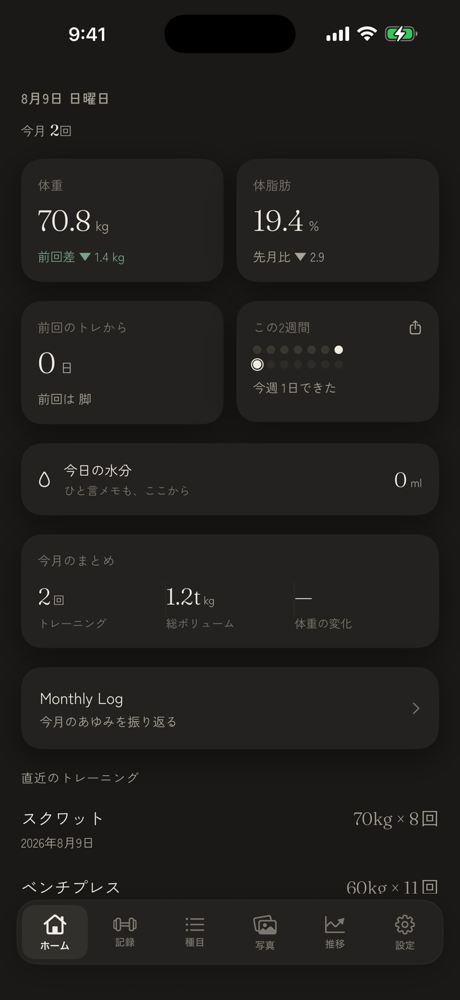
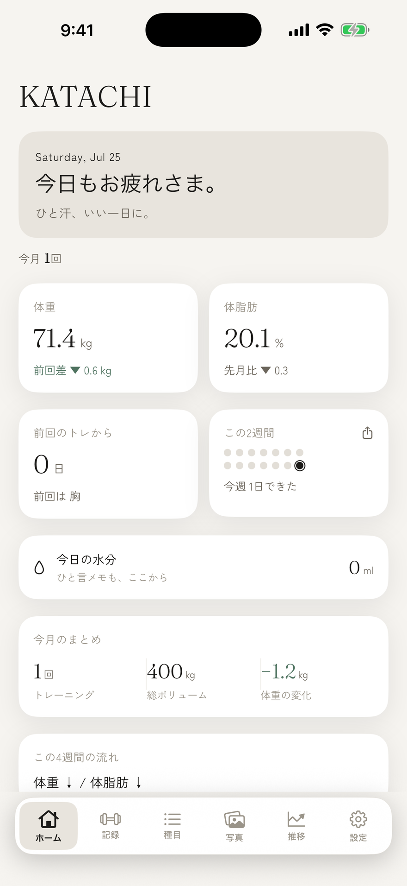
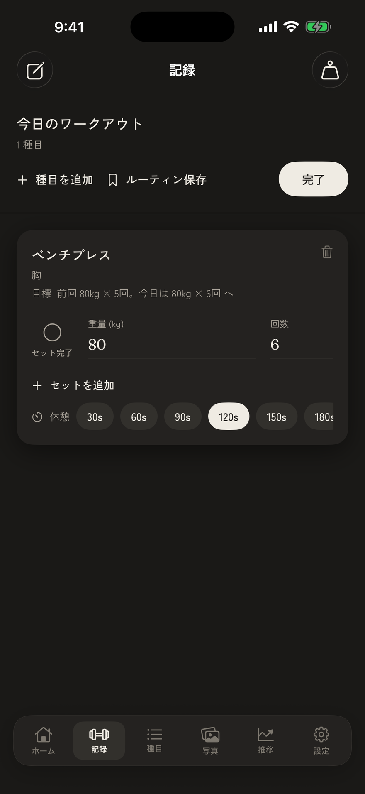
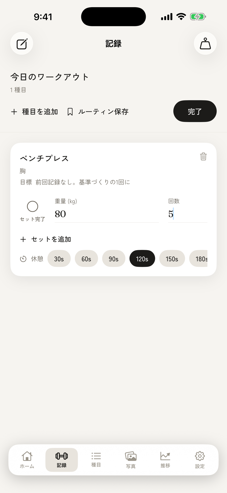
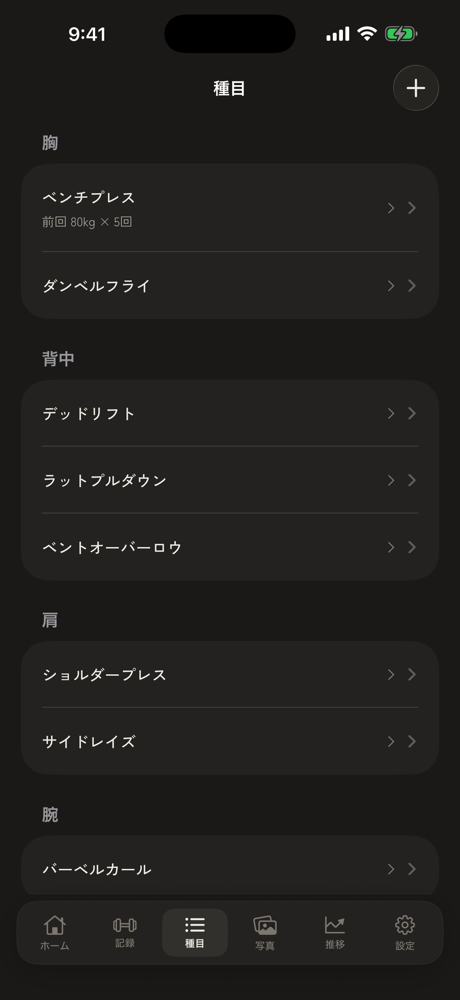
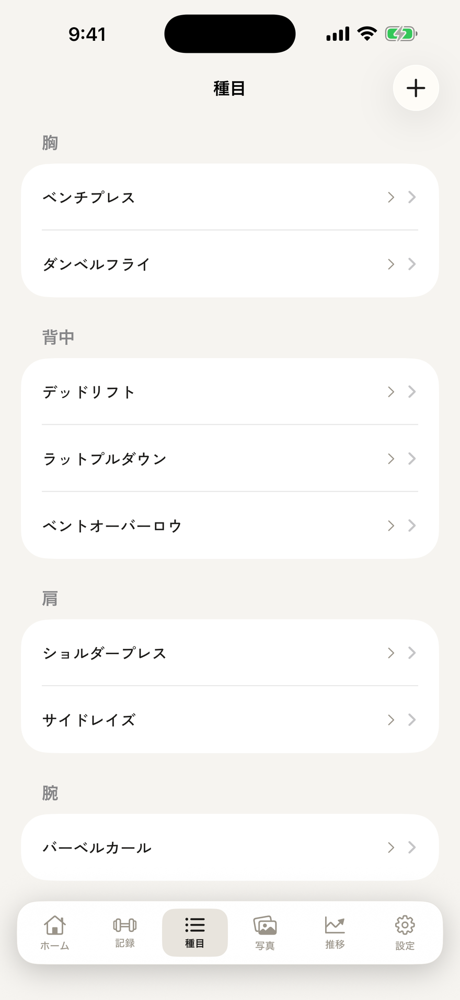
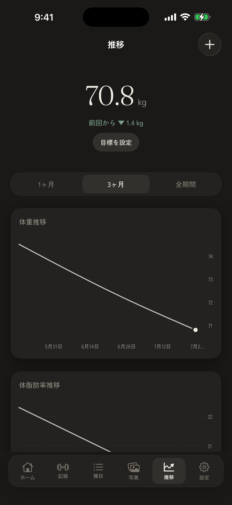
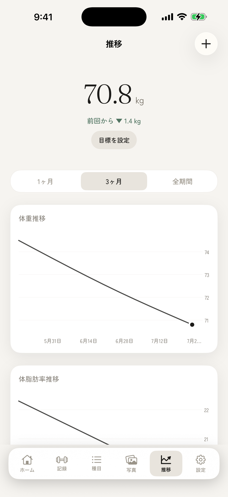
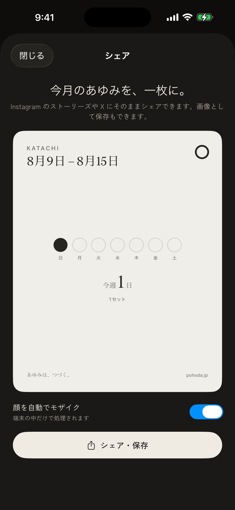

KATACHI を、画面で知る。
体づくりの記録を、静かに続けるために。KATACHI の主な画面が、「続けやすさ」のために何をしてくれるのか——ひとつずつ紹介します。


今日の自分が、ひと目で。
最新の体重と前回差、体脂肪、前回のトレからの日数、今週の頻度を、ひとつのホームに。アプリを開くたび、自分の現在地が静かに分かります。
「ベンチプレス ↑ / 体重 ↓ / 体脂肪 ↓」——この4週間の流れを一行で結び、挙上の伸びと体の変化をつなげて見せます。


記録は、迷わず一行で。
種目を選ぶと前回の記録がすぐ出て、「前回 60kg × 11回。少し重くしてみましょう。」のように、今日狙う重量と回数をそっと提示。ログを掘り返さず、次のセットへ。
セットを終えたら、休憩タイマーが次の一本までを静かに数えます。短すぎず、長すぎず、毎回ベストのコンディションで。


種目ごとに、伸びを見る。
胸・背中・肩……部位ごとに種目を整理。種目をひらけば、推定 1RM（自重なら最高回数）の推移がグラフに。続けるほど、伸びが一本の線になって見えてきます。
種目は、自分で決める。アプリは選定に口を出さず、過去の記録と次の一歩だけを静かに引き受けます。


体の変化を、なめらかな線で。
体重・体脂肪を 1ヶ月 / 3ヶ月 / 全期間で振り返り。目標ラインを重ねて、今の位置を確かめられます。
煽る数字ではなく、ただ事実を。静かに、でも確かに、変化が積み上がっていきます。

今月のあゆみを、一枚に。
その月の Before / After、体重・体脂肪の変化、トレーニング日数を一枚のカードに。Instagram のストーリーズや X にそのままシェアでき、画像として保存もできます。
「あゆみは、つづく。」——来月の自分の章を、また見たくなる。
記録も写真も、原則あなたの端末の中に。
体型写真という機微なデータを扱うからこそ、KATACHI は外部にデータを送りません。広告も行動追跡もありません。詳しくは KATACHI のページ をご覧ください。